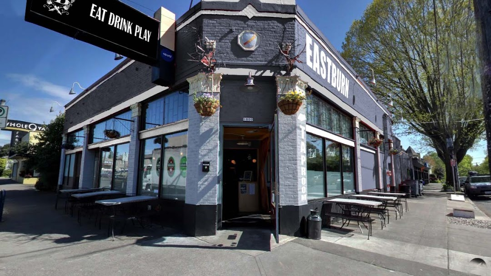

About us
Established in 2008, Eastburn is a neighborhood Public House that is as diverse as Portland’s population.
Our Sous Chef [Chef Porkchop] elevates the public house dining experience with innovative brunch and dinner dishes that comfort and delight. Our Bar Supervisor [Matthew] makes sure that guests experience the best of hospitality, while overseeing a lovingly curated draft list and cocktail menu.
Our Events Manager [Michael] makes sure all of the private events book here have the personal touch and go off with out a hitch with customer service and menus. Be a guest at your own event by booking at the Eastburn.
Eastburn boasts two floors of dining and entertainment with two full bars, 16 rotating taps, and a heated patio with swing chairs and fire tables.
From fantastic brunch, lunch, full menu happy hour and dinner, to drinks on one of our two patios, to a game of skee-ball in the TapRoom…EastBurn has something for everyone!
